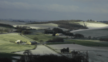
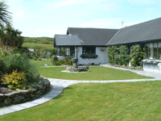

Author
Fun Stuff

My All-Time Favorite novels:
(no particular order)
Dinner at the Homesick Restaurant (Anne Tyler)
A Prayer for Owen Meany (John Irving)
The Wind-up Bird Chronicle (Haruki Murakami)
Love in the Time of Cholera (Gabriel Garcia Marquez)
Angle of Repose (Wallace Stegner)
This House of Spirits (Isabel Allende)
Cat's Eye (Margaret Atwood)
Don Quixote (Miguel de Cervantes Saavedra)
Plainsong (Kent Haruf)
Cloud Atlas (David Mitchell)
Case Histories (Kate Atkinson)
Lonesome Dove (Larry McMurtry)
Canopus in Argos: Archives (Doris Lessing) all books in the series
Author's dogs--two great danes. Stella is the harlequin-colored. Oola is the fawn-colored. |
||

|
Author's desk |
||
Every writer needs a little quiet. Here are my favorite retreat places.
Oleander Cottage Lomagne Region of France

Hedgebrook Whidbey Island near Seattle, WA
Anam Cara Coulagh Bay, County Cork, Ireland

Favorite Blogs:
Our Stories: the Blog This one is mine--about how stories affect lives!
Feast the e-zine
Original Impulse Blog
Women's News Network
Camera Toss
Hurd Audio(son's music blog)
Persistence of Vision (other sons's animation blog)
Got to love a good baseball game! |
||

Home — Author — Contact — Novels — Memoir — Short Stories — Picture Books —Report Problem
© Jerrie Hurd (text, photos, design)